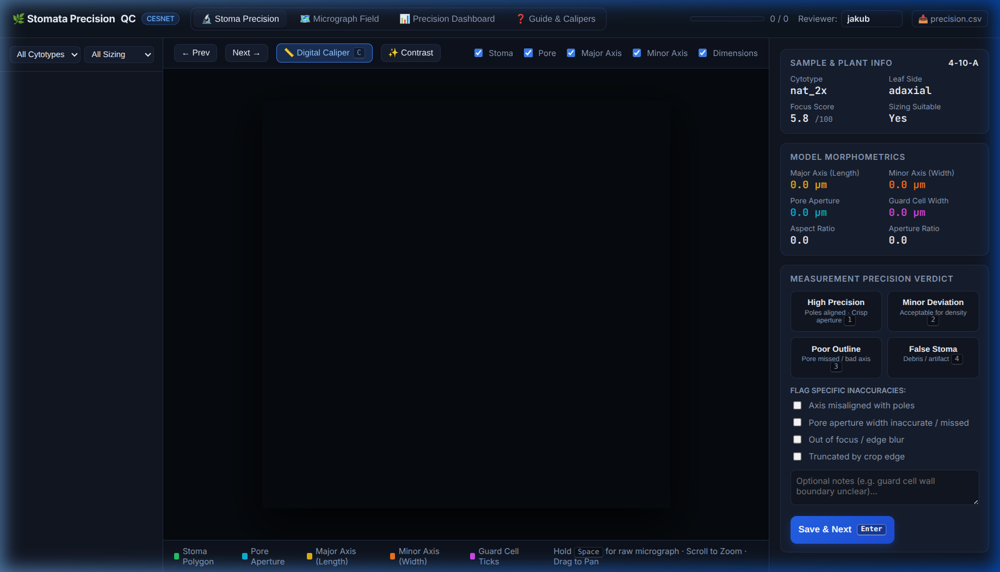
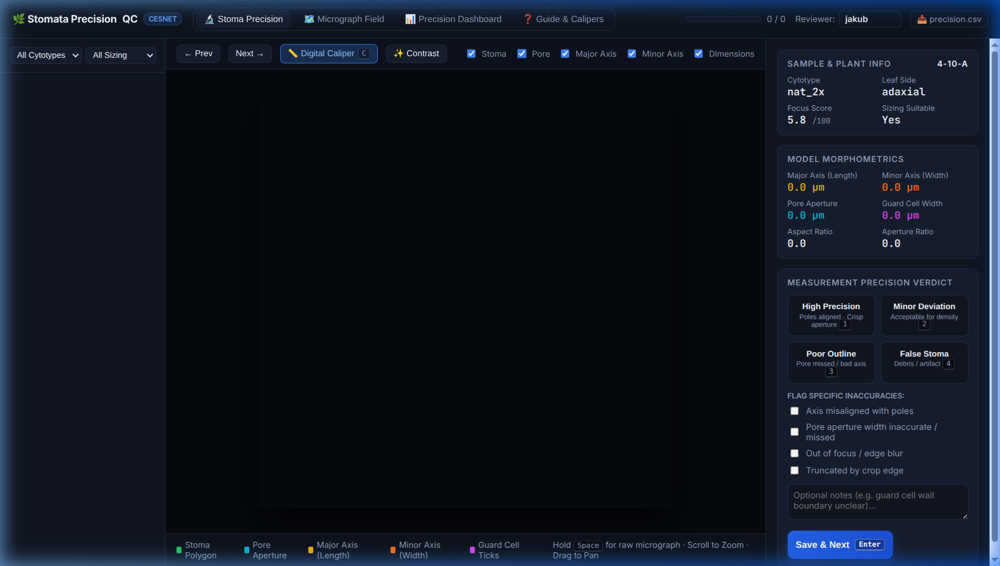
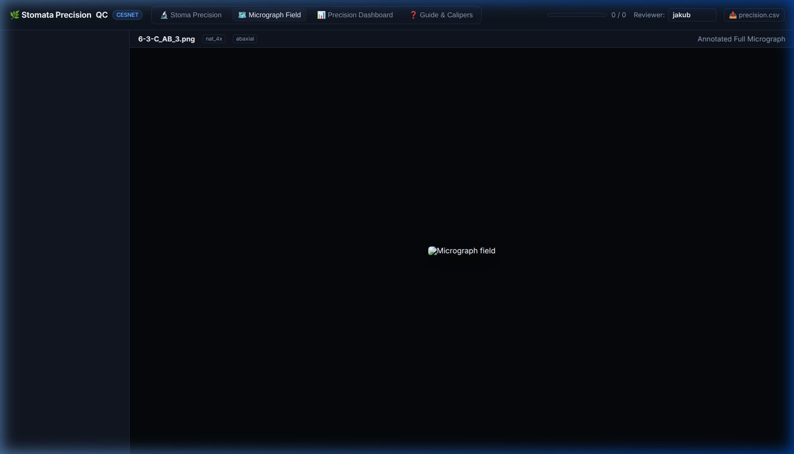
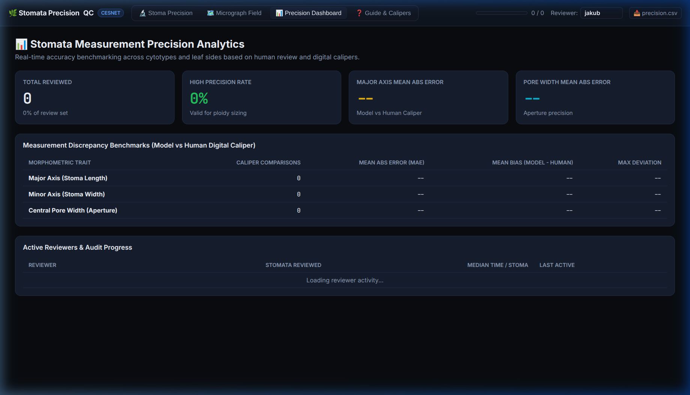

Stomata Measurement Precision QC App
Interactive cloud application on CESNET for visual inspection, digital caliper benchmarking, and quality control
The Stomata QC and Measurement Precision application is live on the CESNET cloud infrastructure:
Public URL: https://stomata-review-stenc.dyn.cloud.e-infra.cz
Hosted in the stenc-ns Kubernetes namespace with automatic Let’s Encrypt TLS encryption, matching the established pollen-review and viability-review infrastructure.
Overview & Purpose
In automated plant morphometry, the central question for downstream ecological and evolutionary analysis is: How precise is the automated measurement?
The Stomata Precision QC App provides researchers and collaborators with a dedicated, interactive web environment to directly evaluate: 1. Segmentation accuracy: Does the YOLO segmentation polygon tightly and faithfully follow the outer guard cell boundary and inner aperture? 2. Measurement axis alignment: Does the major axis strictly span between the two stomatal poles? Does the minor axis line pass through the exact center of maximum pore width? 3. Pore aperture precision: Is the central aperture opening accurately measured, even for challenging, narrow, or partially closed stomatal pores? 4. Ploidy suitability gate: Does the stoma meet strict biometric criteria for cell size comparison across ploidy levels (is_suitable_for_ploidy_sizing), or is it only valid for stomatal density counting? 5. Human ground-truth benchmarking: Using the built-in Digital Caliper Tool, researchers can manually measure stomata on screen and immediately quantify the model’s Mean Absolute Error (MAE) and bias in micrometres (\(\mu\text{m}\)).
Key Features & Interface Tour
1. High-Magnification Stoma Precision View
The primary workspace provides an interactive HTML5 canvas with continuous smooth zoom (\(1\times\) to \(8\times\)) and drag-to-pan navigation to closely inspect individual stomata at sub-pixel resolution.

Vectorized Anatomical Overlays
The canvas overlays the mathematical measurement vectors calculated by the pipeline:
| Layer | Color Code | Biological Meaning | Mathematical Calculation |
|---|---|---|---|
| Stoma Body | Green (#22c55e) |
Outer boundary of guard cell pair | YOLO Class 1 segmentation polygon |
| Pore Aperture | Cyan (#06b6d4) |
Central aperture opening | YOLO Class 0 central polygon |
| Major Axis | Yellow (#eab308) |
Longitudinal stoma length (\(L_{\text{maj}}\)) | Minimum bounding rectangle long axis (\(\mu\text{m}\)) |
| Minor Axis | Orange (#f97316) |
Full transverse stoma width (\(L_{\text{min}}\)) | Orthogonal chord through centroid (\(\mu\text{m}\)) |
| Pore Width | Cyan Line (#06b6d4) |
Transverse pore aperture diameter (\(P_w\)) | Line intersection with pore boundary (\(\mu\text{m}\)) |
| Guard Cell Width | Magenta (#d946ef) |
Radial thickness of single guard cell | \((L_{\text{minor}} - P_{\text{width}}) / 2\) (\(\mu\text{m}\)) |
- Hold
Space: Instantly hides all vector overlays to inspect the raw, unfiltered microscopy image. - Press
X: Toggles CLAHE (Contrast-Limited Adaptive Histogram Equalization) to enhance faint guard cell walls in lower-contrast images.
2. Interactive Virtual Digital Caliper (C)
The app features an integrated Digital Caliper Tool allowing researchers to independently measure any anatomical dimension with precision crosshairs directly on the crop canvas.

How to Benchmark Measurement Precision:
- Click 📏 Digital Caliper (or press C).
- Click and drag across the stoma poles (for length), across the stoma waist (for width), or across the pore opening.
- The Caliper HUD displays:
- Measured physical distance in \(\mu\text{m}\) (using the calibration \(\text{PX\_TO\_UM} \approx 0.1107675\,\mu\text{m/px}\)).
- Quick buttons: Set Major, Set Minor, or Set Pore to record the ground truth comparison.
- The system calculates the exact discrepancy: \[\Delta = \text{Model} - \text{Human}\quad (\mu\text{m})\] \[\text{Error } \% = \frac{|\text{Model} - \text{Human}|}{\text{Human}} \times 100\%\]
3. Panoramic Micrograph Field Explorer
Switching to the Micrograph Field tab allows researchers to step back and inspect the full \(3096 \times 4140\) px brightfield microscopy slide with all detected stomata annotated.

Researchers can verify field-level characteristics: - Spatial distribution and clustering (Clark-Evans dispersion index) - Epidermal quality, focus variation across the leaf surface, air bubbles, and staining artifacts - Jump directly to any slide or plant ID from the left sidebar
4. Precision Benchmark Analytics Dashboard
The Precision Dashboard tab compiles real-time accuracy benchmarks across all reviewer evaluations and caliper measurements.

Available Benchmarks & Telemetry:
- Precision Classification Rate: Percentage of stomata verified as High Precision vs Minor Deviation vs Poor Measurement.
- Mean Absolute Error (MAE): Average deviation in \(\mu\text{m}\) between automated model measurements and human digital caliper measurements for Major Axis, Minor Axis, and Pore Width.
- Mean Bias: Identifies whether the automated model tends to systematically over- or under-estimate pore aperture or cell width.
- Reviewer Progress & Audit Trail: Number of stomata reviewed per collaborator, median time per evaluation, and timestamps.
- One-Click CSV Export: Direct download of
precision.csvfor statistical analysis in R or Python.
Rapid Review Workflow & Keyboard Shortcuts
To enable rapid quality control of hundreds of stomata without mouse fatigue, all key actions are bound to single keystrokes:
| Shortcut | Action | Description |
|---|---|---|
| 1 | High Precision | Poles aligned, aperture crisp, verified for ploidy sizing |
| 2 | Minor Deviation | Acceptable for density counting, slight angle or edge deviation |
| 3 | Poor Measurement | Significant outline error, pore missed, or severe distortion |
| 4 | False Stoma | Non-stoma epidermal debris, air bubble, or artifact |
| Enter | Save & Next | Saves decision to CESNET S3 and advances to next stoma |
| C | Digital Caliper | Toggles virtual caliper crosshairs for manual measurement |
| X | Contrast Filter | Toggles CLAHE contrast boost |
| Space | Peek Raw Image | Hold to temporarily hide overlays |
| ← / → | Navigate | Move to previous / next stoma in the queue |
Cloud Architecture & Storage Integration
The review application operates entirely stateless inside the cluster, persisting all review data directly to the CESNET S3 Ceph object store (peg-bucket):
s3://peg-bucket/Ostatni/Stomata/Review/
├── manifest.json # Full dataset manifest with geometric vectors
├── crops/ # High-resolution 360x360 stoma crops (JPEG)
├── overviews/ # Scaled panoramic field micrographs (JPEG)
└── decisions/ # Reviewer decisions and caliper ground truth
└── {item_id}/
└── {reviewer}.json # JSON audit record per item and reviewerBecause decisions are committed directly to S3 as individual JSON records, reviews are safely preserved across pod updates or restarts, and multiple team members can review simultaneously without conflicts.
Deployment & Maintenance
The app can be redeployed or updated with a single script:
bash deploy_stomata_review.shThis updates the Kubernetes ConfigMap, applies the Deployment and Ingress specifications in k8s/stomata-review.yaml, and executes a zero-downtime rolling restart on the CESNET cluster.